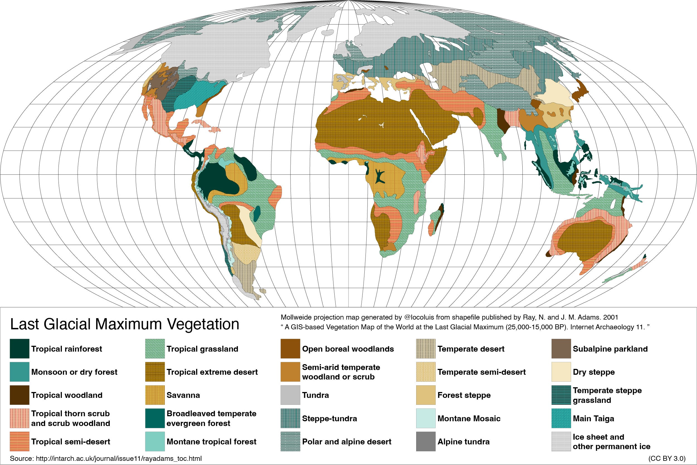

You can read Healing for free, and you can reach me directly by replying to this email. If someone forwarded you this email, they’re asking you to sign up. You can do that below.
If you really want to help spread the word, then pay for the otherwise free subscription. I use any money I collect to increase readership through Facebook and LinkedIn ads.
Today’s read: 9 minutes.
Here’s a starter:
In his writings an Italian sage
Says the best is the enemy of the good;
Not that one cannot increase in caution,
In goodness of soul, in talents, in knowledge;
Let us seek the best on these chapters;
Everywhere else we avoid the delusion.
In its happy state which can please,
Live in his place, and keep what he has!…
The fairy is coming, and maybe a bit late.
Present to everything, she was on the sidelines.
“You see,” she said to her goddaughter,
“That you were an artless prude.
My dear child, nothing is so dangerous
Than to leave the good for the better.”Voltaire, La Bégueule (Conte Moral) [The Prude (A moral tale)], 1772.
In this poem, Voltaire describes the fate of a beautiful woman who, unimpressed by her comfortable life, finds it necessary to alleviate her boredom with an affair, with unfortunate consequences. [Choosing to remain with a previous choice when we find out that we haven’t made a wrong choice, to begin with, is the famous “Monty Hall” problem , where switching is the more favorable choice, at least statistically!]
Over the past nine months, as I’ve stepped back into the world of “energy”, I’ve reconnected with colleagues who are more intelligent and more purposeful technical experts than me. In conversation, I continue to bring up the “nuclear desalination” solution 1 . It inevitably generates skeptical pushback—not that it’s unworkable, but that the regulatory hurdles involved in anything nuclear at the scale needed are hard to overcome. The pushback generally continues along the lines of “I have a better idea.” While these conversations are both stimulating and interesting, the problem remains unsolved, and while we can’t change the Laws of Nature, we can change the Laws of Man. Regulatory hurdles are preferable to the impossible.
To focus attention on devising practical solutions, I thought I’d take a step back to summarize the critical questions that a valid solution must address.
Here’s the context:
When I transitioned from pharma-biotech to energy back in 2010, the contrast in my casual conversations could not have been more remarkable. In pharma-biotech, nobody knows how to cure a disease exactly, so everybody listens to a new idea as if it might work. By contrast, in energy, everybody experiences it daily, everybody has their frame of reference, but nobody listens. In pharma-biotech, there are a few subject-matter experts on each disease (also called “key opinion leaders” or just KOLs) whose pronouncements become Gospel. Conversely, there is a surplus of highly qualified (but narrow) subject-matter experts in energy. These experts array themselves as a circular firing squad, shooting down all ideas other than those in their field of expertise. The result is unfortunate: Nothing happens.
My qualifications to weigh in here are, I think, unparalleled. While at ARPA-E, I reviewed proposals for everything in energy. Ideas ranged from the potentially transformational (engineering pine trees for higher energy content, for example) to the bizarre (using hair clippings from barbershops as a renewable energy source or attaching a carbon fiber to the moon to harness its rotational energy). So, with only slight hyperbole, I’ve seen it all. Unfortunately, however clever, most ideas don’t survive contact with the real world.
Fortunately, there are well-established rules of what is possible, the Laws of Nature. But even then, the range of possible solutions is restricted by human nature: Truly transformational ideas must be adopted to have an impact. 2 Finally, we’ve become both risk-averse and technology optimists as a society. This affectation leads to the pursuit of the promise of the better when viable solutions exist today.
Finally, I think my opinions are as unbiased as I can make them. I am not “selling” anything, I’m not competing for grants, and this rag is free. So, other than a small amount of self-satisfaction, I don’t care whether nuclear desalination is implemented or not. But, if not that, then what? I care only that we strive to solve an existential problem with our eyes open.
To that end, I propose three (3) simple questions that any solution to the “climate change” problem must address. They’re based on three hard-and-fast limits: Scale, money, and time. Any solution must satisfy all three simultaneously.
“In the long run, can the solution scale to substantial impact?”
The first question is based on an ARPA-E metric, courtesy of Dr. David Danielson , one of the Agency’s founding program directors. In evaluating new programs, he proposed that we consider a rough threshold of “one quad” (quadrillion BTU) to measure potential impact. This quantity is roughly 1% of the energy used in the United States—on the one hand, one percent is a minor impact, but on the other, a quad is a massive ask for most technology proposals. [In David’s new role as Managing Director at Breakthrough Energy Ventures, a similar metric relevant to global warming has been established, technologies that can scale to 500 megatons of carbon dioxide, roughly 1% of worldwide emissions.]
It is gratifying for inventors to imagine that if enough partial solutions are created, someone else will combine these solutions so that the problem will succumb to our collective cleverness. The story continues with:
-
Look at the smartphone!
-
We created the Internet from an idea!
-
We’ve put men on the moon by stating our will to do so!
But, unless we compare the scale of the solution to the scale of the problem we’re looking to solve, any approach will be half-assed. And it takes many such minor impacts to fully address the problem! [See the issue on “stabilization wedges”. 3 ]
“In the long run, will the solution continue without government subsidies?”
This question is based on the essential role of energy in the modern economy. Without energy, there is no global economy, and energy is carbon. Diverting significant energy to clean up current emissions (necessary to stabilize the atmosphere) means that humans can’t use the energy for other economically productive purposes. Today, Western governments that seek popular support can focus economic resources toward solving “climate change”. But not all governments are Western. And to have the desired impact, all governments must link the revenue related to emissions control with measures to control and/or capture those emissions. Unfortunately, the track record for such linkages is dreadful. Even in “progressive”, climate-conscious California, the Cap & Trade budget 4 funds the Governor’s “discretionary” fund (i.e., slush fund with loose categorical limits), and none is earmarked for direct air capture of carbon dioxide emissions. Thus, industries pay to emit, and the funding does not clean up these emissions. That’s unsustainable.
I focus on direct air capture of carbon dioxide emissions for several previously stated reasons. If you object to this focus, I suggest you read earlier issues.
Any direct air capture process, to be sustainable, must be theoretically capable of supporting itself economically. Because any process will cost money, any self-supporting process must create at least as much value as it costs. In addition, the Laws of Nature limit how much energy it takes, and energy is an unavoidable expense, so the energy must be cheap and carbon-free.
How much energy are we talking about? Here’s a way to think about it: Energy is harnessed in two different ways when a carbon-based fuel is burned. First, and most obviously, the process generates heat, which humans can use directly. But heat can also do work. Consider the steam engine, where the heat of combustion causes liquid water to expand into a much larger volume of steam to move a piston or a turbine. In an internal combustion engine (literally, an engine that “burns inside”), the combination of oxygen and fuel generates pressure due to the expansion of the gas after it is burned.
In both cases, the expanded gas is vented and is diluted into the atmosphere. The energy balance problem is simple to visualize: The energy needed to recapture and compress the CO2 component of this expanded gas is at least equal to the amount of energy that we generated from its expansion in the first place. In practice, because no process is perfect, it takes more energy, often a lot more, than the energy produced in the first place.
What this means for the economic problem is that to clean up from the consequences of combustion will take at least as much energy as the combustion provided in the first place. Imagine all of the coal, natural gas, and petroleum reserves we extract and burn every year. To undo the consequences of that combustion, it will take an amount of energy at least as large as was produced in the first place. There’s no way to avoid the problem, and it’s at an almost unimaginably colossal scale. And any new energy must come from carbon-free sources. This notion roughly fits with the calculation that, to capture all the carbon we release in a given year, we’ll have to double our carbon-free energy production. So even hitting Danielson’s 1% objective is a daunting prospect.
“Will the solution have an impact before it is too late?”
This question is a question of time, but it’s not as if we know precisely how much time we have left. Indeed, it may already be too late in climate change to suspend our use of geologic carbon for energy—the only sure path is to recapture past emissions. In the last issue, I pointed out that academic experts agree that sooner is better than later. The problem only gets worse the longer we wait to implement workable solutions.
This part of the problem is where Voltaire’s opening passages come into focus. Nuclear desalination is a solution today that is neither physically impossible nor economically prohibitive. But, by continuing to seek a better solution, we’re ignoring the virtues of the technologies we already have.
Because I promised data with each installment, I’d like to leave you with a data-centric puzzle that’s been on my mind of late. It’s a real puzzle (to me, at least); I don’t have an answer and would appreciate any guidance.
Here’s the puzzle: During the last Ice Age, Earth was a much colder place, and sheets of (white) snow and ice spread over much of the land. This change should have reduced the amount of sunlight available for photosynthesis but may have helped cool the planet through higher albedo (reflection of sunlight). Yet the concentration of atmospheric carbon dioxide (an annual balance of photosynthesis and respiration) was lower . This observation suggests that there was, in fact, more photosynthesis/less respiration than today. How was this possible with less land? Can it be accounted for, quantitatively, by the (slow) equilibration of the atmosphere with the oceans? Or are maps like these simply wrong?

This map clearly shows an increase in barren areas versus rainforests.
If you have insight, I’m happy to credit you in a future installment (or, you can write it!)